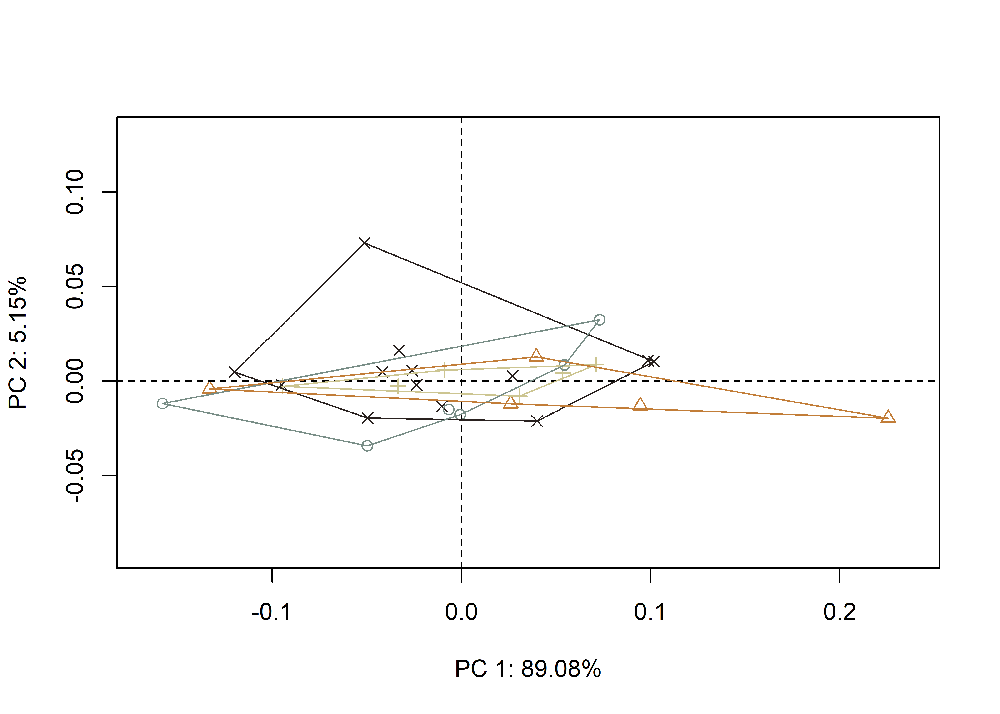

Chapter 2 Geometric morphometrics
2.1 Load packages + data
# install required analysis packages
#devtools::install_github("r-lib/here")
#devtools::install_github("karthik/wesanderson")
#devtools::install_github("MomX/Momocs")
# load packages
library(here)
library(wesanderson)
library(Momocs)
# read images + attribute data
jpg.list <- list.files(here("/jpegs"), full.names = TRUE)
att.data <- read.csv("att.data.csv", header = TRUE, as.is = TRUE)
# attributes to factors
att.data$site <- as.factor(att.data$site)2.2 Generate outlines
## Extracting 40.jpg outlines...## [ 1 / 40 ] 1564.jpg
## [ 2 / 40 ] 56.jpg
## [ 3 / 40 ] 63.jpg
## [ 4 / 40 ] 66.jpg
## [ 5 / 40 ] 70.jpg
## [ 6 / 40 ] 72.jpg
## [ 7 / 40 ] 74.jpg
## [ 8 / 40 ] 75.jpg
## [ 9 / 40 ] 76.jpg
## [ 10 / 40 ] 77.jpg
## [ 11 / 40 ] 78.jpg
## [ 12 / 40 ] 79.jpg
## [ 13 / 40 ] 80.jpg
## [ 14 / 40 ] 81.jpg
## [ 15 / 40 ] hs01.jpg
## [ 16 / 40 ] hs02.jpg
## [ 17 / 40 ] hs03.jpg
## [ 18 / 40 ] hs04.jpg
## [ 19 / 40 ] hs05.jpg
## [ 20 / 40 ] hs06.jpg
## [ 21 / 40 ] hs07.jpg
## [ 22 / 40 ] hs09.jpg
## [ 23 / 40 ] hs10.jpg
## [ 24 / 40 ] hs11.jpg
## [ 25 / 40 ] hs12.jpg
## [ 26 / 40 ] hs13.jpg
## [ 27 / 40 ] hs14.jpg
## [ 28 / 40 ] hs15.jpg
## [ 29 / 40 ] hs16.jpg
## [ 30 / 40 ] hs17.jpg
## [ 31 / 40 ] hs18.jpg
## [ 32 / 40 ] hs19.jpg
## [ 33 / 40 ] hs21.jpg
## [ 34 / 40 ] hs22.jpg
## [ 35 / 40 ] hs23.jpg
## [ 36 / 40 ] hs24.jpg
## [ 37 / 40 ] hs25.jpg
## [ 38 / 40 ] hs26.jpg
## [ 39 / 40 ] hs27.jpg
## [ 40 / 40 ] hs28.jpg## Done in 4.2 mins2.3 Pile and mosaics


2.4 Calibrate harmonic + EFA
## $gg
##
## $q
## h1 h2 h3 h4 h5 h6 h7 h8 h9 h10
## 1564 0.06538783 83.73166 83.74478 95.18042 95.20287 98.04862 98.05803 99.03996 99.04504 99.48926
## 56 0.22324783 83.64937 83.76452 95.46131 95.47908 98.37198 98.38437 99.15474 99.17293 99.59248
## 63 0.25787330 85.02633 85.10052 95.35533 95.42183 98.09164 98.10546 99.08908 99.09630 99.53068
## 66 0.06108652 84.92002 84.92186 95.56112 95.58052 98.25817 98.26621 99.22318 99.22493 99.60297
## 70 0.01641294 83.87831 83.88656 95.25136 95.26699 98.01831 98.03389 99.01252 99.02885 99.47045
## 72 0.32422987 84.02348 84.04258 95.58366 95.59304 98.14078 98.17136 99.17588 99.18056 99.56809
## 74 0.04513558 84.35218 84.38195 95.35119 95.37194 98.00815 98.02426 99.05380 99.05913 99.47408
## 75 0.58114028 84.76778 84.79439 95.66764 95.73962 98.14977 98.15681 98.82477 98.85969 99.55935
## 76 0.05935906 84.15856 84.29768 95.49126 95.50522 98.21184 98.21212 99.20343 99.20929 99.60677
## 77 0.06322060 84.95895 84.98997 95.64109 95.64485 98.29677 98.29892 99.24590 99.24698 99.63024
## 78 0.99059621 83.85110 84.22573 95.38084 95.43176 97.97254 97.99735 99.04940 99.05961 99.50441
## 79 0.60515520 85.10036 85.20246 95.21539 95.26520 98.02928 98.06168 98.93810 98.97537 99.46950
## 80 0.15392107 85.37131 85.39759 95.37915 95.41225 97.95755 97.96493 98.97020 98.97397 99.39767
## 81 0.37953325 84.83476 84.88395 95.38135 95.38754 98.31738 98.32037 99.22853 99.23309 99.64349
## hs01 0.31586615 85.01435 85.06008 95.50520 95.51839 98.21540 98.23417 99.07125 99.07840 99.53861
## hs02 1.29759744 84.21084 84.27207 95.19607 95.20844 97.91603 97.92845 98.93081 98.93366 99.41631
## hs03 0.41052369 85.11252 85.13029 95.51954 95.53573 98.03758 98.04557 98.97559 98.97593 99.42650
## hs04 0.54162833 85.11478 85.34153 95.43467 95.47382 97.99907 98.02609 99.04116 99.04375 99.47160
## hs05 0.14150519 85.29046 85.32237 95.57579 95.60024 98.16641 98.16940 99.06122 99.09538 99.46966
## hs06 0.30873473 84.01907 84.06619 95.34243 95.37441 98.03862 98.05570 99.00551 99.01844 99.44887
## hs07 0.87501523 85.64679 85.71348 95.72036 95.76753 98.11451 98.12873 99.10227 99.11353 99.45655
## hs09 1.64579018 84.66102 84.87101 96.00374 96.02543 98.32657 98.34477 99.21093 99.21551 99.55016
## hs10 0.40010888 84.69790 84.75302 95.34661 95.38913 98.10782 98.11981 99.03493 99.04528 99.44084
## hs11 1.00107270 85.73911 85.77438 95.44902 95.50448 98.21802 98.22237 98.96009 98.96673 99.38755
## hs12 0.02291225 84.60793 84.85391 95.64525 95.69681 98.12740 98.14333 99.02911 99.03721 99.40352
## hs13 0.34452316 84.37964 84.42880 95.35779 95.37026 97.94337 98.05298 99.03681 99.04682 99.45767
## hs14 1.20779365 85.39735 85.58668 95.24067 95.31582 98.14489 98.19386 98.94192 98.95480 99.38570
## hs15 0.59205815 84.91763 85.00264 95.82543 95.83219 98.15266 98.15553 99.07022 99.07415 99.44451
## hs16 0.02909841 84.64948 84.67298 95.30305 95.31440 98.16437 98.17040 99.17150 99.17480 99.50628
## hs17 0.18664639 85.87244 85.94411 95.51051 95.60409 98.11418 98.14176 99.00242 99.00599 99.42868
## hs18 0.02115437 85.06705 85.07104 95.20609 95.21608 98.06800 98.07204 99.05988 99.06767 99.45289
## hs19 0.46528252 85.21101 85.24831 95.57976 95.58437 98.11414 98.12260 99.14263 99.15173 99.49851
## hs21 0.86656744 85.60440 85.67854 95.87459 95.91751 98.25244 98.26841 99.15835 99.20472 99.57216
## hs22 0.16451575 85.62890 85.65256 95.70945 95.74730 98.24990 98.30414 99.12100 99.15428 99.47179
## h11 h12 h13 h14 h15 h16 h17 h18 h19 h20
## 1564 99.49248 99.73812 99.74022 99.85783 99.85943 99.91834 99.92402 99.95453 99.96035 99.98121
## 56 99.60960 99.79193 99.79911 99.86435 99.87388 99.91287 99.91852 99.95662 99.96127 99.97377
## 63 99.53215 99.74389 99.74520 99.84748 99.84950 99.91703 99.92301 99.95080 99.95257 99.97144
## 66 99.60754 99.79287 99.79658 99.87593 99.87872 99.92798 99.93003 99.95595 99.95731 99.97032
## 70 99.47679 99.68765 99.69106 99.79102 99.79257 99.85869 99.85974 99.91323 99.91465 99.94573
## 72 99.58097 99.77760 99.78274 99.88884 99.89597 99.91723 99.92752 99.95087 99.95406 99.97479
## 74 99.47672 99.70984 99.71608 99.84721 99.85067 99.89717 99.90047 99.94158 99.94229 99.96150
## 75 99.57009 99.70809 99.71425 99.77920 99.78736 99.89669 99.90022 99.92668 99.93224 99.94765
## 76 99.61332 99.76905 99.76981 99.85080 99.85362 99.91328 99.91415 99.95420 99.95657 99.97482
## 77 99.63785 99.82667 99.83138 99.90370 99.90664 99.93687 99.93973 99.96679 99.96815 99.98173
## 78 99.51515 99.70639 99.72058 99.84340 99.84544 99.89933 99.90173 99.92483 99.92770 99.95688
## 79 99.48172 99.66824 99.68023 99.78038 99.78690 99.84897 99.86463 99.93641 99.93946 99.95381
## 80 99.40276 99.63721 99.64174 99.75838 99.75961 99.83757 99.83968 99.89568 99.89767 99.93119
## 81 99.65205 99.82020 99.82663 99.88346 99.89757 99.93815 99.94453 99.95582 99.95929 99.97435
## hs01 99.54106 99.72518 99.73304 99.82301 99.82415 99.88806 99.89157 99.92512 99.92629 99.95542
## hs02 99.42007 99.62308 99.63174 99.74656 99.75741 99.84317 99.84592 99.89757 99.90227 99.93477
## hs03 99.44692 99.66719 99.68180 99.81388 99.81784 99.87144 99.87558 99.91548 99.91707 99.94100
## hs04 99.48251 99.69811 99.72512 99.81585 99.81841 99.87807 99.87929 99.91350 99.91499 99.93117
## hs05 99.47299 99.68936 99.69688 99.79869 99.80156 99.86987 99.87298 99.91014 99.91185 99.93845
## hs06 99.45402 99.66858 99.67070 99.76857 99.77294 99.84593 99.84983 99.89230 99.89786 99.92864
## hs07 99.45967 99.69778 99.69983 99.82659 99.83187 99.88303 99.88436 99.90799 99.90980 99.93590
## hs09 99.55216 99.70984 99.71169 99.82717 99.83047 99.88361 99.88587 99.92130 99.92441 99.94850
## hs10 99.45002 99.65025 99.66999 99.80246 99.80909 99.87075 99.87448 99.90640 99.91465 99.93446
## hs11 99.39770 99.57343 99.57739 99.73597 99.74347 99.80618 99.82062 99.85657 99.87253 99.90024
## hs12 99.40451 99.66727 99.66913 99.78738 99.79278 99.84208 99.85945 99.89934 99.90009 99.93716
## hs13 99.46313 99.70666 99.70741 99.78953 99.79099 99.85820 99.85990 99.91395 99.91530 99.94737
## hs14 99.39745 99.66890 99.68001 99.77658 99.79135 99.86177 99.86836 99.91434 99.91684 99.94085
## hs15 99.45544 99.65427 99.66503 99.78095 99.79027 99.87123 99.87239 99.91468 99.91858 99.94289
## hs16 99.51143 99.70107 99.70569 99.82843 99.83223 99.88498 99.88664 99.93611 99.93754 99.96035
## hs17 99.42921 99.63871 99.64131 99.76996 99.77022 99.85748 99.86146 99.90357 99.90563 99.93158
## hs18 99.45720 99.67788 99.68014 99.78266 99.78545 99.85841 99.86288 99.90943 99.91469 99.94559
## hs19 99.49905 99.70750 99.71826 99.82255 99.82370 99.88306 99.89420 99.93443 99.93579 99.95429
## hs21 99.58150 99.74100 99.74601 99.84468 99.84715 99.88953 99.89144 99.93151 99.93677 99.95667
## hs22 99.47820 99.70153 99.70710 99.78636 99.78783 99.84786 99.85110 99.89126 99.90010 99.92658
## h21 h22 h23 h24 h25 h26 h27 h28 h29
## 1564 99.98355 99.98711 99.98886 99.99188 99.99344 99.99817 99.99834 99.99893 100
## 56 99.97663 99.98261 99.98482 99.98987 99.99152 99.99592 99.99702 99.99854 100
## 63 99.97540 99.98704 99.98797 99.99222 99.99322 99.99702 99.99767 99.99946 100
## 66 99.97086 99.98248 99.98280 99.99061 99.99119 99.99650 99.99691 99.99953 100
## 70 99.94613 99.96655 99.96774 99.98077 99.98141 99.98816 99.98862 99.99928 100
## 72 99.97710 99.98054 99.98310 99.98931 99.99521 99.99759 99.99827 99.99960 100
## 74 99.96314 99.97716 99.97961 99.98922 99.99101 99.99414 99.99434 99.99871 100
## 75 99.95128 99.96677 99.96965 99.98484 99.98691 99.98782 99.99180 99.99779 100
## 76 99.97593 99.98330 99.98486 99.98908 99.98979 99.99175 99.99402 99.99951 100
## 77 99.98219 99.98700 99.98773 99.99088 99.99227 99.99511 99.99597 99.99938 100
## 78 99.95921 99.97344 99.97733 99.98366 99.98653 99.99273 99.99459 99.99818 100
## 79 99.95729 99.97434 99.97548 99.98323 99.98486 99.99487 99.99564 99.99707 100
## 80 99.93179 99.95387 99.95811 99.98269 99.98357 99.99131 99.99203 99.99992 100
## 81 99.97619 99.98145 99.98318 99.99184 99.99344 99.99675 99.99735 99.99963 100
## hs01 99.96512 99.97181 99.97523 99.98199 99.98513 99.98835 99.99297 99.99650 100
## hs02 99.93984 99.96783 99.96942 99.98490 99.98575 99.99027 99.99652 99.99921 100
## hs03 99.94319 99.96117 99.96336 99.97649 99.97853 99.98773 99.98920 99.99860 100
## hs04 99.93250 99.95566 99.95626 99.96887 99.97141 99.98156 99.98259 99.99082 100
## hs05 99.94109 99.97074 99.97285 99.98266 99.98301 99.99154 99.99221 99.99877 100
## hs06 99.93021 99.95298 99.95427 99.97074 99.97393 99.98804 99.99125 99.99946 100
## hs07 99.93684 99.94923 99.95709 99.96944 99.97467 99.98587 99.98888 99.99455 100
## hs09 99.94862 99.96885 99.97355 99.98888 99.99053 99.99462 99.99479 99.99837 100
## hs10 99.95227 99.96701 99.96890 99.98098 99.98174 99.98921 99.99091 99.99886 100
## hs11 99.91415 99.94403 99.94836 99.97138 99.97233 99.98109 99.98693 99.99065 100
## hs12 99.94034 99.96257 99.96651 99.98075 99.98320 99.99051 99.99281 99.99949 100
## hs13 99.94962 99.96092 99.96246 99.97827 99.97856 99.99129 99.99421 99.99880 100
## hs14 99.94380 99.95491 99.95702 99.96970 99.97469 99.98212 99.99042 99.99626 100
## hs15 99.94773 99.96340 99.96608 99.98138 99.98192 99.99315 99.99497 99.99962 100
## hs16 99.96205 99.97472 99.97621 99.98423 99.98463 99.99035 99.99353 99.99872 100
## hs17 99.93264 99.96657 99.96806 99.97847 99.97980 99.98971 99.99179 99.99961 100
## hs18 99.94688 99.96119 99.96191 99.98293 99.98312 99.99127 99.99266 99.99875 100
## hs19 99.95665 99.96971 99.97245 99.98028 99.98694 99.99206 99.99296 99.99661 100
## hs21 99.95913 99.97030 99.97228 99.98662 99.98873 99.99177 99.99454 99.99743 100
## hs22 99.92801 99.94979 99.95174 99.96381 99.96752 99.98771 99.99607 99.99967 100
## [ reached getOption("max.print") -- omitted 6 rows ]
##
## $minh
## 90% 95% 99% 99.9%
## 5 5 9 19# 9 harmonics needed to capture 99 percent of variation
calibrate_reconstructions_efourier(norm.outlines, range = 1:9)
2.5 PCA



2.6 MANOVA
## PC axes 1 to 16 were retained## Df Hotelling-Lawley approx F num Df den Df Pr(>F)
## fac 1 3.3167 4.7677 16 23 0.0003766 ***
## Residuals 38
## ---
## Signif. codes: 0 '***' 0.001 '**' 0.01 '*' 0.05 '.' 0.1 ' ' 1